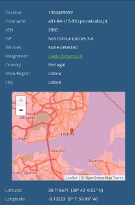
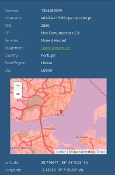
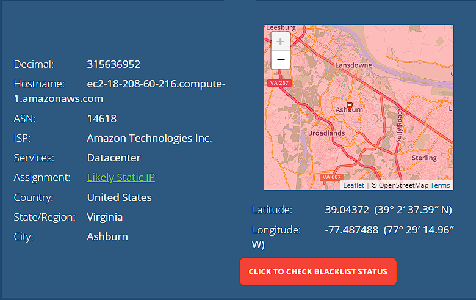
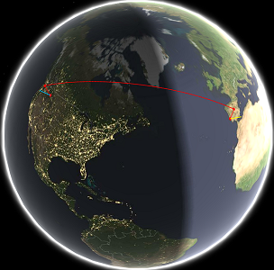
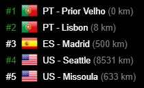
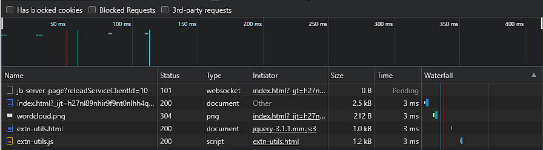
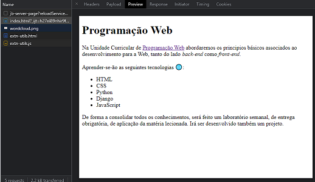
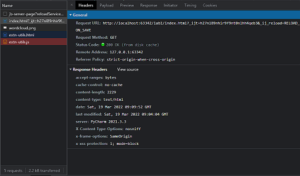
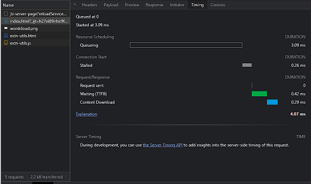

IP
Usando o what is my ip consegui analisar e comparar a exatidão do site em que dois dispositivos diferentes calharam no mesmo sitio.
IP do Computador IP do Telemovel 

Também conseguimos saber o ip de outros dispositivos por exemplo do Heroku utilizando get-ip para saber o ip pelo url e depois o what is my ip outra vez para saber a localização
Tracert
Com estas imagens conseguimos ver por onde passam os pacotes do meu computador até ao servidor Heroku
 -
Inspect
Aqui conseguimos ver os ficheiros que existem na minha página Web

Preview Headers Timing
  O preview serve para vizualizar como ficaram os ficheiros
O Headers mostrará informações sobre o site como o url, o metodo de request
O Timing quanto tempo demorou a fazer algumas coisas como por exemplo quanto tempo demorou a enviar o request ou a fazer download do conteudo